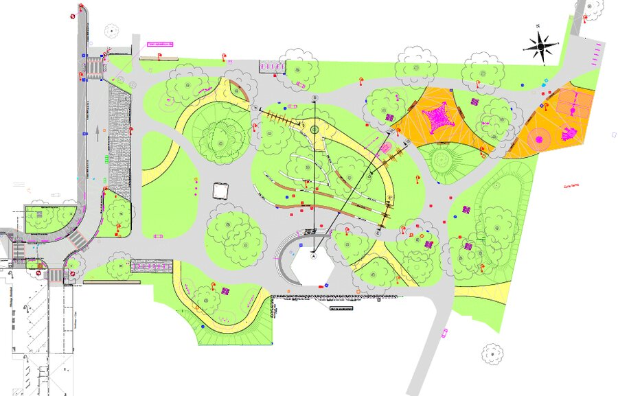
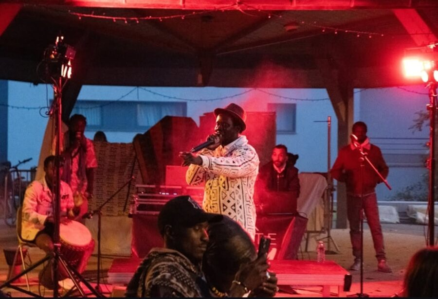
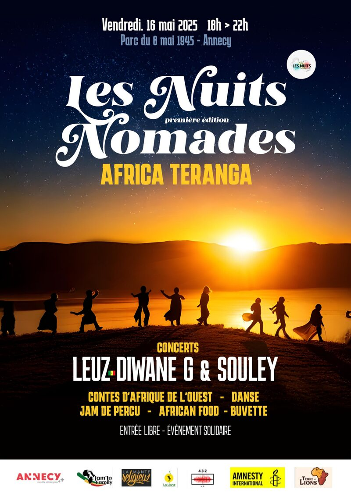
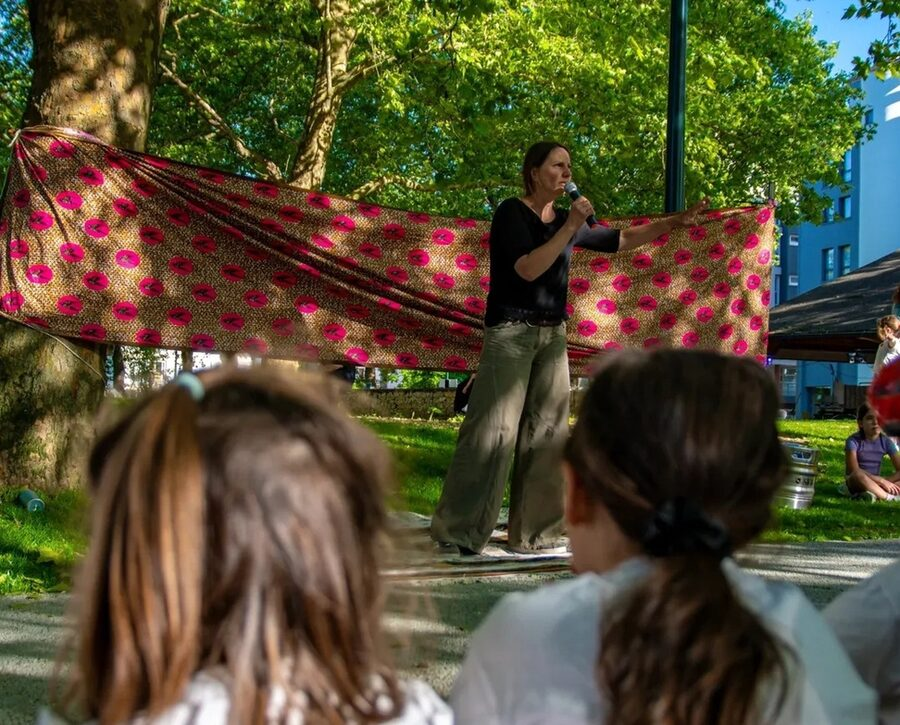
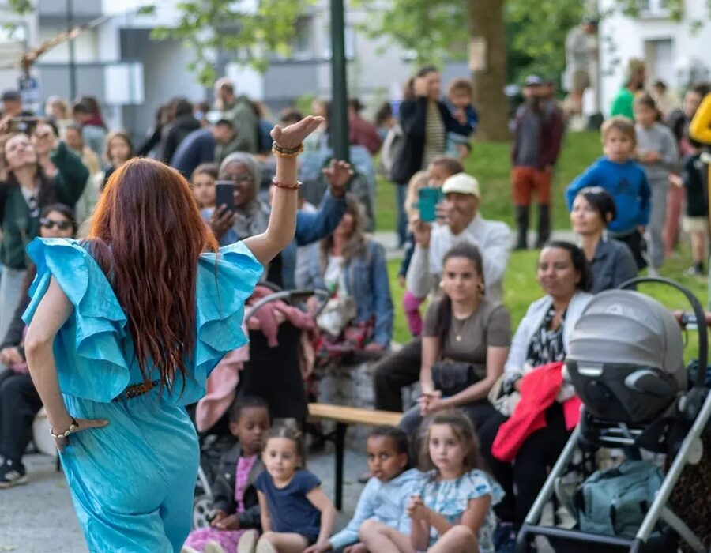
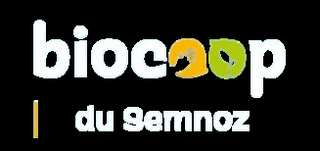
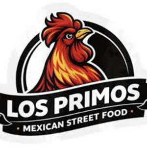

Les Nuits
Nomades
#2
« Que Onda »
Le Projet Les Nuits Nomades
Après le succès d’Africa Teranga, place à la deuxième édition : « Que Onda », placée sous le signe du Mexique. « Qué onda », c’est l’équivalent familier de « comment ça va ? » ou « quoi de neuf ? » — une invitation chaleureuse à partager un moment ensemble.
Le Vivre Ensemble
Dans un monde où les différences culturelles peuvent parfois être sources de division, cet événement de proximité et en plein air constitue une occasion de réunir tous les publics autour de la culture. À la fois festif et inclusif, il vise à rassembler des personnes de tous horizons, origines culturelles et générations variées, dans un même espace de partage et d’échange.
Un Événement Pour Tous
Cet événement en plein air offre un cadre idéal : l’accès gratuit garantit qu’il soit ouvert à tous, quels que soient l’âge, le statut social ou les origines. Le parc devient un lieu de rencontre, de partage et de fête, où les frontières sociales et culturelles s’effacent. Une invitation à se rencontrer, à échanger et à célébrer la diversité des individus et des cultures.
Projet Solidaire
En mobilisant et en invitant le tissu associatif local et international, l’association 432 HZ permet à des projets solidaires de financer une partie de leurs actions et de leurs missions.
Soutenir les Artistes Locaux
La programmation de l’événement permet de proposer un espace d’expression à des artistes du territoire, du monde du spectacle vivant, en rémunérant chacun·e d’entre eux·elles pour la prestation proposée.
Le Site — Parc du 8 Mai 1945 Annecy · Cran-Gevrier


Le parc, espace de verdure au cœur du quartier Chorus, accueillera cet événement de plein air.
Espace de partage et de rencontres par excellence, il emmènera le public, l’espace d’une soirée, de la Péninsule du Yucatán à Guadalajara, en passant par la région de Los Cabos !
Adresse :
Parc du 8 Mai 1945
74960 Cran-Gevrier · Annecy
17h – 22h La Programmation
Contes du Mexique et d’Amérique Centrale
Catherine Allessio
Les contes circulent d’oreilles en bouches. Ils disent ce qu’ils savent du monde. Ceux-là sont originaires d’Amérique Centrale et du Mexique. Ils ont beaucoup voyagé, d’oreille en bouche et de bouche en oreille, dans leur langue d’origine et puis dans d’autres aussi. Voyons ce qu’ils nous disent.
Tissu Aérien
Iris Chardonneaux (Annecy)
Une performance aérienne poétique et gracieuse, suspendue entre ciel et terre, pour ouvrir la soirée en beauté.
Déambulation de Mariachis
Jalisco Kings (Lyon)
Déambulation à travers le parc, au rythme des sonorités traditionnelles mexicaines. Les Mariachis mettront le public de bonne humeur avec leurs mélodies joyeuses et leurs costumes hauts en couleurs.
Concert de Mariachis
Jalisco Kings (Lyon)
Les 4 musiciens seront accompagnés d’une danseuse en costume traditionnel. Ils interpréteront la musique des mariachis, des boleros et les grands succès mexicains.
Concert — Son Jarocho
Cocoxoca (Paris · Genève)
Cocoxoca, en langue Nahuatl, veut dire résonner, faire du bruit en parlant d’un vase qui n’est pas plein ou d’un œuf qui n’est pas frais. Le son jarocho est un genre musical répandu principalement dans l’État mexicain de Veracruz, joué lors des fandangos où il est associé à la danse zapateada et à la poésie chantée.
Danses Traditionnelles
Association Mayahuel (Lyon)
Du nom de la sève de cactus pour fabriquer la tequila ! L’association partage le plaisir de pouvoir revêtir les vêtements traditionnels et de danser au rythme des classiques du répertoire mexicain. Deux couples vous proposeront une démonstration dans leurs splendides costumes.
Jonglage Lumineux
Melody Le Moal (Annecy)
Explosions de couleurs et d’images pour finir en beauté ! L’artiste transmet sur scène une énergie qui tient le public en haleine, en le transportant vers un monde de distorsion où la lumière prend des formes surprenantes.
Mais Aussi Les Nuits Nomades #2
Performance Graff
L’artiste annécien KASUR réalisera en fil rouge une fresque inspirée de l’événement, en graffiti. Une tombola à participation libre permettra de financer son travail.
Ateliers
Piñatas et loterie mexicaine viendront égayer le jardin du 8 Mai pour le plus grand plaisir du public. Venez découvrir ces deux traditions populaires emblématiques !
Animation Enfants
Ateliers de fabrication de loisirs créatifs, maquillage, course de karts à pédales… tout pour ravir les enfants et offrir un espace adapté aux familles.
Espace Restauration
Laissez-vous tenter par la cuisine mexicaine : véritable explosion de saveurs et de couleurs, voyage sensoriel et solidaire.
Espace Buvette
Bières artisanales et boissons rafraîchissantes pour vous hydrater et vous offrir un espace de convivialité !
#1ère Édition — 2025 Africa Teranga
Le terme « teranga » vient du wolof et désigne l’hospitalité, la générosité et l’accueil chaleureux réservé aux invités. Une valeur profondément ancrée dans la culture sénégalaise, qui va bien au-delà du simple repas partagé : c’est une ouverture d’esprit, une convivialité et une volonté de faire en sorte que l’autre se sente chez lui.




432 HZ Qui Sommes Nous
L’association, créée en 2021, a pour objet :
- La promotion et la diffusion du spectacle vivant.
- L’organisation de manifestations culturelles (concerts, spectacles, performances, fêtes de quartier).
- La réalisation d’activités à but éducatif et préventif.
Les Partenaires Les Nuits Nomades
Merci pour leur soutien. Sans eux, l’événement n’aurait pas pu exister !


religieuz

INTERNATIONAL
EcoResponsable